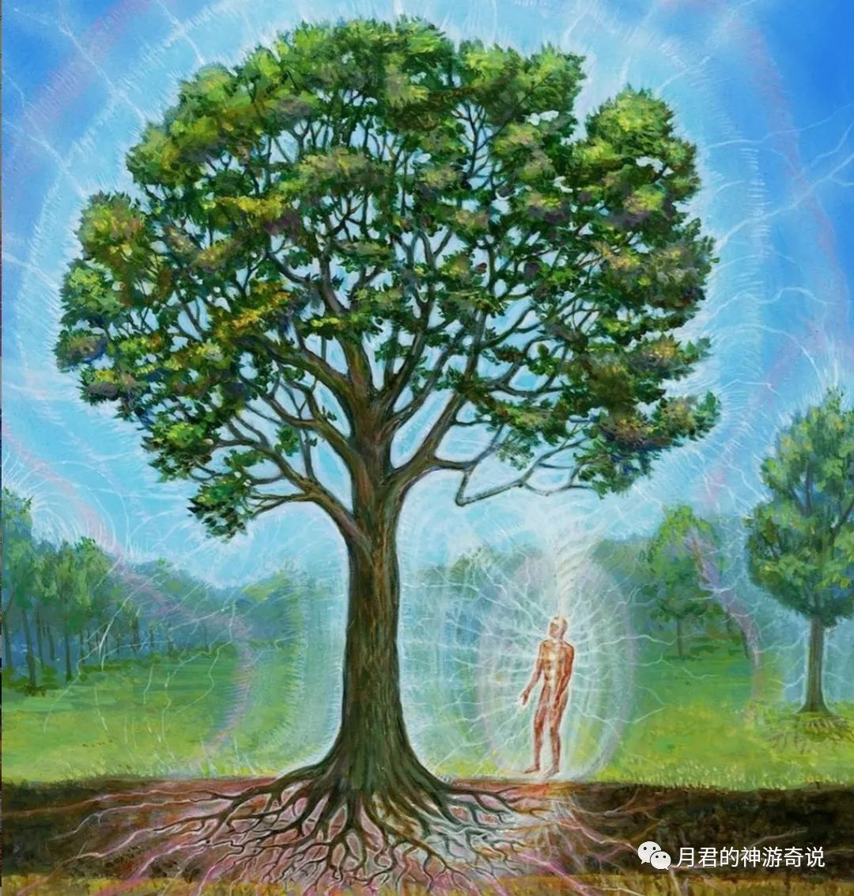
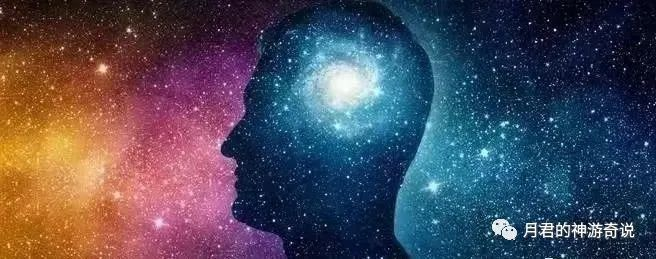
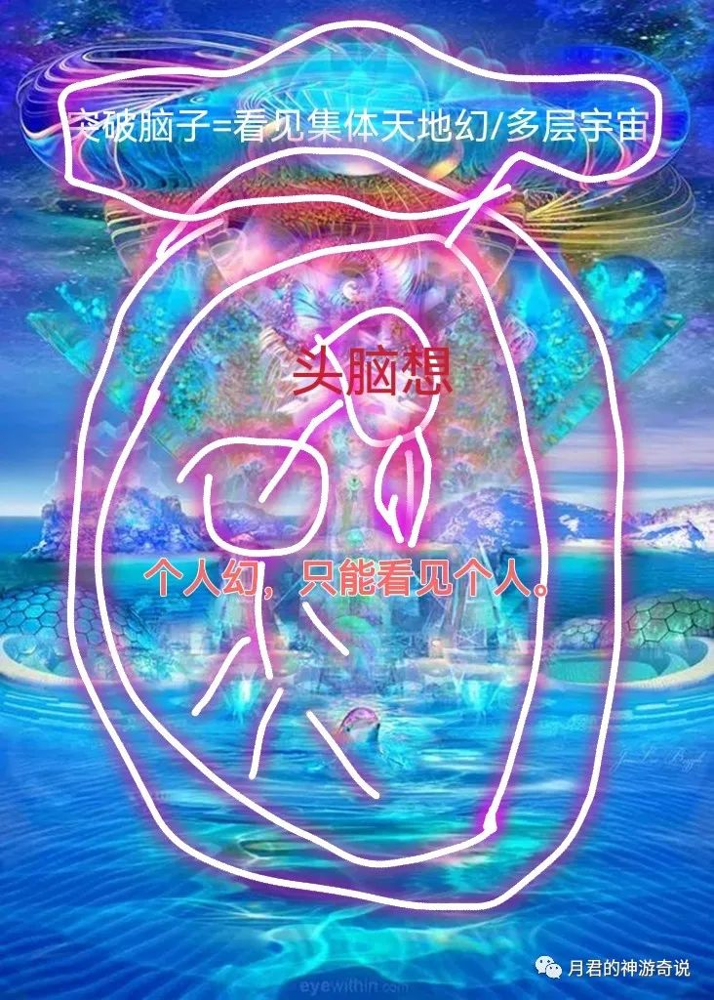
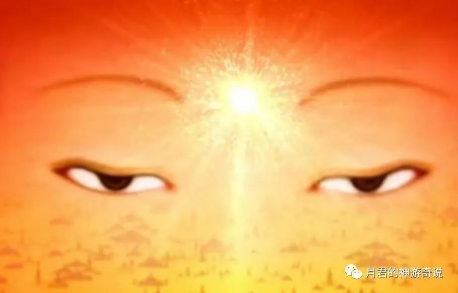

月君： 脱离轮回的途径
原创 月君 月君的神游奇说 2022-06-11 13:24 发表于四川
原文链接(长) 原文链接(短)
蓝梦修:
@永恒境｜惊宇 昨天练习最长时间的观心，差不多接近2个小时，期间进入过几次深层入静，入静后能量感好强，有能量从脚底进来，一直到头顶循环！
练着练着也有杂念，练叉了，变成主动出体练习，身体有振动感，跳动感！眉心轮激活过几次，能清晰看到白色的能量团！
从入静到结束，全程都是酥酥麻麻的电流感！
早上起来打坐了40分钟，左肩颈本身有一点发紧，今天打坐尽然好放松了！督脉似乎也通畅了一些！
这样子观心，凝神不说，这样给肉体充能强化也是不错呀
月君(不闲聊):
@蓝梦修 观心入静=意识通透，信息开始通透的接收，链接潜意识，以及宇宙/高维更容易。
月君(不闲聊):
若夫修道，先观其心
月君(不闲聊):
观心入静是链接潜意识，高维的基本
月君(不闲聊):
时常心都平静，都在观心状态，24小时都能链接潜意识，平时随便一观，都可以链接频率范围内任意意识/维度/灵魂存有。
月君(不闲聊):
意识时常都在深层静默中，看见什么都能交流什么。
月君(不闲聊):
看见路边的车，凝神一观它，都可以链接它，都可以听到车在说话，花草树木在说话。
月君(不闲聊):
可见光流/意识流，万物潜意识交流、交融一体。


永恒:
车都有灵么
月君(不闲聊):
人的先天本能，心灵感应
永恒:
\[发呆\]
月君(不闲聊):
车有灵，石头也有，石头也会说话。
謎之微笑:
观心的本质是不是就是认知抑制和还原感知
月君(不闲聊):
观心的本质=停止念想造幻，突破头脑的想像。重获意识的无限性，意识脱离头脑，心在哪里，就能链接哪里。
月君(不闲聊):
意识有多快？比光速快亿亿万倍
月君(不闲聊):
心想一个人，马上就到哪里，心想到某个宇宙，瞬间到达。
月君(不闲聊):
意识/心脱离身体、头脑束缚，也就是所谓的出神，合一，链接，超感知。
月君(不闲聊):
灵魂自由
月君(不闲聊):
没有身体，时间，空间，头脑认知限制
月君(不闲聊):
……
月君(不闲聊):
凡是固化的，有限的念想，认知。都是限制意识的无限可能性。
月君(不闲聊):
比如出现的任何杂念，都是限制你的，让你执着头脑里的念想，在只在脑子里，没有出去脑子外面的世界。这个就是个人幻相，个人梦。
月君(不闲聊):
破了之后，正常就可以观到集体世界，做梦，每天做梦，都是在集体梦界，灵界醒来。
月君(不闲聊):
在某某宇宙中醒来，在某某星球醒来，在某某身体中醒来……
月君(不闲聊):
真人无梦，即真人都是在非梦的世界，和物质界一样真实的世界醒来。
蓝天:
这段内容，含金量好高\[强\]
月君(不闲聊):
个人梦到集体梦，到多层集体梦，到看见本源造梦，见造物主。一切如梦幻泡影。
蓝天:
保存了，谢谢
月君(不闲聊):
99%的人意识在都脑子里，没有出去身体的范围，没有出去头皮，所谓连周围天地都链接不上。就是因为自我的限制
喻彦斌:
\[强\]
月君(不闲聊):
出现一个念头，在意识之中，就形成念头相对的幻相阻止，所以头脑的念想越多=层层墙壁挡在眼前，所以什么都链接不上，什么都感觉不到，什么都看不见。
月君(不闲聊):
个人头脑牢笼，然后就是集体形成的牢笼，这就是轮回的原因。因为入了幻境，当真
謎之微笑:
又能成文了
喻彦斌:
好舒服的文字
謎之微笑:
月叔真是好人啊
月君(不闲聊):

杂念，头脑幻想、评判、分离阻碍了看见世界的本质。下意识的种种认知，判断各种，导致了只停留在头脑层面，进入了心的层面，心是平静的，可通天地。
月君(不闲聊):
脱离轮回以及恢复个人先天灵魂能力，突破封印的本质。
月君(不闲聊):
各门派分各界，如道家分33重天，就是33层墙壁幻相。
月君(不闲聊):
每层都是世界的规则墙壁。也是人/神/生命创造的世界，创造的宇宙。所以是虚构的，
月君(不闲聊):
怎么分界，也是人为的。大体分为多少层世界牢笼。
月君(不闲聊):
跳出由时空，法则组成三界。三界之外没有时空，没有规则，没有墙壁，就是见自性，见如来。包裹着一切。最最最开始，没有开始，没有时空，没有规则。。没有宇宙，没有世界，这是万物的本质。一切一切都是后来自发形成的，各种规则，各种维度和世界。
月君(不闲聊):
道在心中，看不见道，是墙壁挡住了“双眼”，“黑暗蒙蔽了双眼”。
这是最根本的秘密，其他一切修法都是娱乐项目，不按这个方向去突破，去修的话，再修久也没用。
天机不可泄露，那是小道。那是术法，规则。
大道本无秘㊙️，人人可知，人人可传，人人皆可泄露。

……
金刚经曰：“凡所有相皆是虚妄，若见诸相非相，即见如来”
《清静经》曰：“真常应物，真常得性；常应常静，常清静矣。如此清静，渐入真道；既入真道，名为得道，虽名得道，实无所得；为化众生，名为得道；能悟之者，可传圣道。”